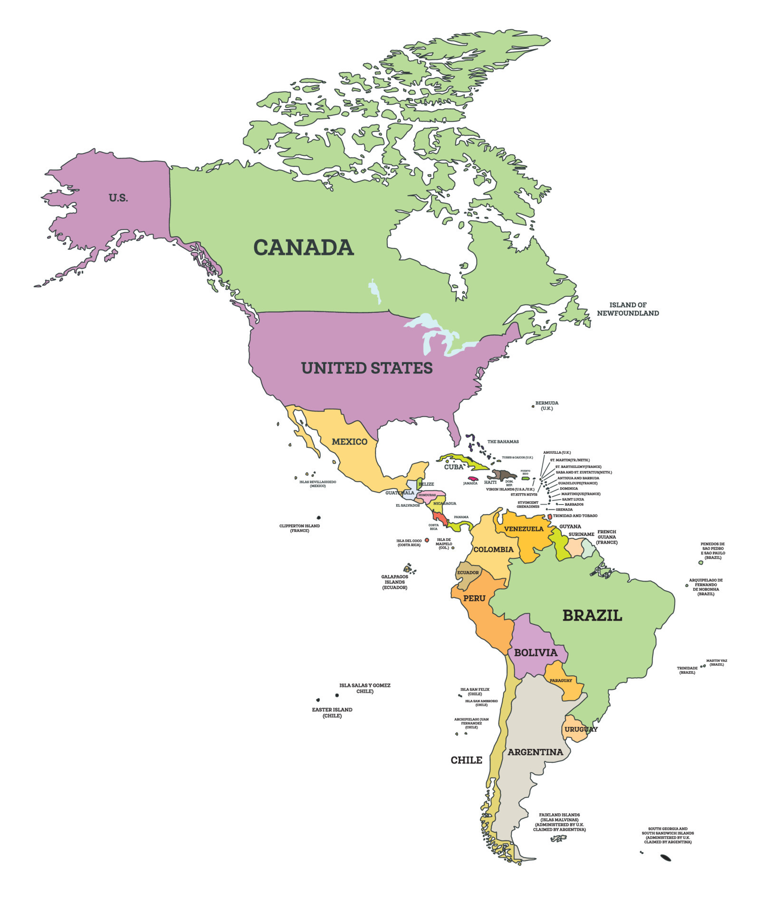

Introducción
América es el segundo continente más grande del mundo, tanto en términos de área como de población. Se extiende desde el Ártico en el norte hasta el Cabo de Hornos en el sur, y desde el Océano Atlántico en el este hasta el Océano Pacífico en el oeste.
Geografía
El continente americano se divide tradicionalmente en tres regiones: América del Norte, América Central y América del Sur. Cada una de estas regiones tiene sus propias características geográficas, culturales y climáticas.
Cultura
La cultura en América es extremadamente diversa, con una rica mezcla de tradiciones indígenas, influencias coloniales europeas y, más recientemente, inmigraciones de todo el mundo. Esto se refleja en la música, la comida, las festividades y las costumbres de los diferentes países.
Economía
La economía de América es igualmente diversa, con países que varían desde los altamente industrializados hasta aquellos en desarrollo. América del Norte, especialmente Estados Unidos y Canadá, es conocida por su economía avanzada, mientras que América Latina tiene economías emergentes con gran potencial de crecimiento.